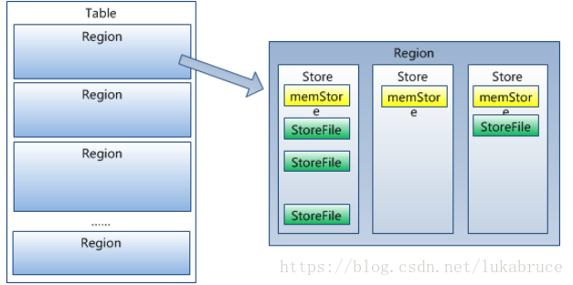
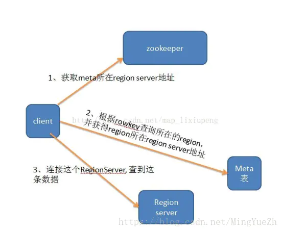

简介
建立在HDFS之上，列存储、实时读写，列式NoSQL数据库，仅支持单行事务。
NoSQL数据库，不支持SQL作为查询语言。
逻辑视图中的空cell在物理上是不存储的，因此可稀疏。
与hadoop一样，Hbase目标主要依靠横向扩展，通过不断增加廉价的商用服务器，来增加计算和存储能力（比关系型数据库好的一点）。
使用场景
数据量大。数据库量要足够多，如果有十亿及百亿行数据，那么Hbase是一个很好的选项，如果只有几百万行甚至不到的数据量，RDBMS是一个很好的选择。因为数据量小的话，真正能工作的机器量少，剩余的机器都处于空闲的状态。
不需要辅助索引。静态类型的列，事务等特性，一个已经用RDBMS的系统想要切换到Hbase，则需要重新设计系统。
结构
row key
用来检索记录的主键，任意字符串(最大长度是 64KB，实际应用中长度一般为 10-100bytes)，在hbase内部，row key保存为字节数组。
存储时，数据按照Row key的字典序(byte order)排序存储。设计key时，要充分排序存储这个特性，将经常一起读取的行存储放到一起。(位置相关性)
注意：
字典序对int排序的结果是1,10,100,11,12,13,14,15,16,17,18,19,2,20,21,…,9,91,92,93,94,95,96,97,98,99。要保持整形的自然序，行键必须用0作左填充。
行的一次读写是原子操作 (不论一次读写多少列)。这个设计决策能够使用户很容易的理解程序在对同一个行进行并发更新操作时的行为。
column family
列族。一个表可以有多个列族column family，每个列族在hdfs上都是单独的一个文件（即每个列都保存到某一个文件中，但每个文件不只一个列）。
列族是表的schema的一部 分(而列不是)，必须在使用表之前定义。
访问控制、磁盘和内存的使用统计都是在列族层面进行的。
Column
Column: 列。属于某一个列族，列名定义为family:qualifier，其中qualifier可以是任意的字符串.列族可以有很多列,列名为family:qualifier。例如 courses:history，courses:math都属于courses 这个列族。列中 的数据是没有类型的，全部是字节码形式存储。
Value(Cell)
由{row key, column( =
通过row和columns确定的为一个存贮单元称为cell。每个 cell都保存着同一份数据的多个版本。版本通过时间戳来索引。
时间戳（Version Number）
1、通过row和columns确定的为一个存贮单元称为cell。每个 cell都保存着同一份数据的多个版本。版本通过时间戳来索引。
2、类型为Long 64位整型，时间戳可以由hbase(在数据写入时自动 )赋值，此时时间戳是精确到毫秒的当前系统时间。时间戳也可以由客户显式赋值。
3、如果应用程序要避免数据版本冲突，就必须自己生成具有唯一性的时间戳。每个 cell中，不同版本的数据按照时间倒序排序，即最新的数据排在最前面。
4、为了避免数据存在过多版本造成的的管理 (包括存贮和索引)负担，hbase提供了两种数据版本回收方式。一是保存数据的最后n个版本，二是保存最近一段时间内的版本（比如最近七天）。用户可以针对每个列族进行设置。
5、如果不指明时间，将会返回每列最新时间的行。
Region

Region：Table按row key区间分割为多个region，即每个region包含一定范围的row key。每个表一开始只有一个region，随着数据量的增加，region会进行自动的split。
HBase建议一个Region的合理大小是500M到3G之间.
region是Hbase中分布式存储和负载均衡的最小单元。最小单元就表示不同的Hregion可以分布在不同的HRegion server上。但一个Hregion是不会拆分到多个server上的。
事实上，HRegion由一个或者多个Store组成，每个store保存一个columns family。
每个Strore又由一个memStore和0至多个StoreFile组成。如图：
StoreFile以HFile格式保存在HDFS上。
架构
Client
1 包含访问hbase的接口，client维护着一些cache来加快对hbase的访问，比如regione的位置信息。
Zookeeper
1 保证任何时候，集群中只有一个master
2 存贮所有Region的寻址入口。
3 实时监控Region Server的状态，将Region server的上线和下线信息实时通知给Master
4 存储Hbase的schema,包括有哪些table，每个table有哪些column family
Master
1 为Region server分配region
2 负责region server的负载均衡
3 发现失效的region server并重新分配其上的region
4 GFS上的垃圾文件回收
5 处理schema更新请求
Region Server
1 Region server维护Master分配给它的region，处理对这些region的IO请求
2 Region server负责切分在运行过程中变得过大的region
！！！注，client访问hbase上数据的过程并不需要master参与（寻址访问zookeeper和region server，数据读写访问regione server），master仅仅维护者table和region的元数据信息，负载很低。
读：

二层架构的定位步骤如下：
（1）用户通过查找zk（zookeeper）的/hbase/meta-region-server节点查询哪台RegionServer上有hbase:meta表。
（2）客户端连接含有hbase:meta表的RegionServer。Hbase:meta表存储了所有Region的行健范围信息，通过这个表就可以查询出你要存取的rowkey属于哪个Region的范围里面，以及这个Region又是属于哪个RegionServer。
（3）获取这些信息后，客户端就可以直连其中一台拥有你要存取的rowkey的RegionServer，并直接对其操作。
（4）客户端会把meta信息缓存起来，下次操作就不需要进行以上加载HBase:meta的步骤了。
链接：https://www.jianshu.com/p/928e139fa450
写过程
数据在更新时首先写入Log(WAL log)和内存(MemStore)中，MemStore中的数据是排序的，当MemStore累计到一定阈值时，就会创建一个新的MemStore，并 且将老的MemStore添加到flush队列，由单独的线程flush到磁盘上，成为一个StoreFile。于此同时，系统会在zookeeper中 记录一个redo point，表示这个时刻之前的变更已经持久化了。(minor compact)
当系统出现意外时，可能导致内存(MemStore)中的数据丢失，此时使用Log(WAL log)来恢复checkpoint之后的数据。
前面提到过StoreFile是只读的，一旦创建后就不可以再修改。因此Hbase的更新其实是不断追加的操作。当一个Store中的StoreFile达到一定的阈值后，就会进行一次合并(major compact),将对同一个key的修改合并到一起，形成一个大的StoreFile，当StoreFile的大小达到一定阈值后，又会对 StoreFile进行split，等分为两个StoreFile。
由于对表的更新是不断追加的，处理读请求时，需要访问Store中全部的 StoreFile和MemStore，将他们按照row key进行合并，由于StoreFile和MemStore都是经过排序的，并且StoreFile带有内存中索引，合并的过程还是比较快。
访问方式
访问hbase table中的行，只有三种方式：
1 通过单个row key访问
2 通过row key的range
3 全表扫描
rowKey的设计原则
（1）Rowkey长度原则
Rowkey 是一个二进制码流，Rowkey 的长度被很多开发者建议说设计在10~100 个字节，不过建议是越短越好，不要超过16 个字节。
原因如下：
①数据的持久化文件HFile 中是按照KeyValue 存储的，如果Rowkey 过长比如100 个字节，1000 万列数据光Rowkey 就要占用100*1000 万=10 亿个字节，将近1G 数据，这会极大影响HFile 的存储效率；
②MemStore 将缓存部分数据到内存，如果Rowkey 字段过长内存的有效利用率会降低，系统将无法缓存更多的数据，这会降低检索效率。因此Rowkey 的字节长度越短越好。
③目前操作系统是都是64 位系统，内存8 字节对齐。控制在16 个字节，8 字节的整数倍利用操作系统的最佳特性。
（2）Rowkey散列原则
如果Rowkey是按时间戳的方式递增，不要将时间放在二进制码的前面，建议将Rowkey的高位作为散列字段，由程序循环生成，低位放时间字段，这样将提高数据均衡分布在每个Regionserver 实现负载均衡的几率。如果没有散列字段，首字段直接是时间信息将产生所有新数据都在一个 RegionServer 上堆积的热点现象，这样在做数据检索的时候负载将会集中在个别RegionServer，降低查询效率。
（3） Rowkey唯一原则
必须在设计上保证其唯一性。
优化
预分区
在建表的时候就定义好拆分点的算法，使用org.apache.hadoop.hbase.util.RegionSplitter类来创建表，并传入拆分点算法，就可以在建表同事定义拆分点算法
方式：shell、JAVA程序
查询优化
setCaching()，用于设置缓存，即设置一次RPC请求可以获取多行数据。这样可以有效的减少服务端与客户端的交互，更有效的提升扫描查询的性能。
setBatch 用于设置批量处理，批量可以让用户选择每一次ResultScanner实例的next操作要取回多少列。
Cache设置了服务器一次返回的行数，而Batch设置了服务器一次返回的列数。
HFile是数据底层存储文件，在每个memstore进行刷新时会生成一个HFile，当HFile增加到一定程度时，会将属于一个region的HFile进行合并，这个步骤会带来开销但不可避免，但是合并后HFile大小如果大于设定的值，那么HFile会重新分裂。为了减少这样的无谓的I/O开销，建议估计项目数据量大小，给HFile设定一个合适的值。
compact
在hbase中每当有memstore数据flush到磁盘之后，就形成一个storefile，当storeFile的数量达到一定程度后，就需要将 storefile 文件来进行 compaction 操作。
Compact 的作用：
① 合并文件
② 清除过期，多余版本的数据
③ 提高读写数据的效率
HBase 中实现了两种 compaction 的方式：minor and major. 这两种 compaction 方式的区别是：
1）Minor 操作只用来做部分文件的合并操作以及包括 minVersion=0 并且设置 ttl 的过期版本清理，不做任何删除数据、多版本数据的清理工作。
2）Major 操作是对 Region 下的HStore下的所有StoreFile执行合并操作，最终的结果是整理合并出一个文件。
BulkLoad
使用MapReduce作业以HBase的内部数据格式输出表数据，然后直接将生成的存储文件加载到一个正在运行的集群中。使用批量加载将比简单地使用HBase API消耗更少的CPU和网络资源。
原理是使用Mapreduce直接生成HFile格式文件后，RegionServers再将HFile文件移动到相应的Region目录下。
有限制，仅适合初次数据导入，以及HBase与Hadoop为同一集群。
HLog(WAL log)
WAL 意为Write ahead log，类似mysql中的binlog,用来 做灾难恢复只用，Hlog记录数据的所有变更,一旦数据修改，就可以从log中进行恢复。
每个Region Server维护一个Hlog,而不是每个Region一个。这样不同region(来自不同table)的日志会混在一起，这样做的目的是不断追加单个 文件相对于同时写多个文件而言，可以减少磁盘寻址次数，因此可以提高对table的写性能。带来的麻烦是，如果一台region server下线，为了恢复其上的region，需要将region server上的log进行拆分，然后分发到其它region server上进行恢复。
常用命令
1、服务器中输入“hbase shell ” ，连接hbase
2、查询所有表 list
3、查看表结构 describe ‘user_action_table’
4、 查询指定列的数据
scan ‘user_action_table’ ,{COLUMNS =>[‘c:action’], LIMIT =>3}
5、通过指定列查询 get